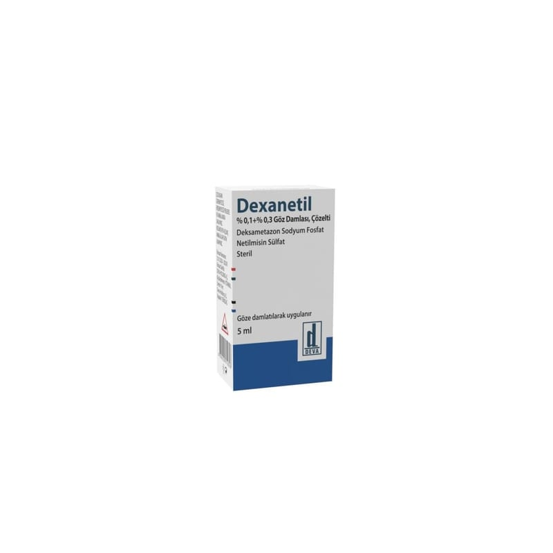

Dexanetil % 0,1 + % 0,3 Göz Damlası, Çözelti, 1 Adet

Ne için kullanılır
KT · Bölüm 1DEXANETİL, 5 mL’lik opak, beyaz renkli ve damlalıklı plastik şişe ambalajında karton kutuda kullanıma sunulmaktadır. DEXANETİL, kullanıma hazır gözle görülür partikül içermeyen, berrak, renksiz steril göz damlasıdır.
DEXANETİL, netilmisin ve deksametazondan oluşan iki etkin madde içerir. • Netilmisin bakterileri öldüren bir antibiyotiktir. • Deksametazon ise inflamasyonu ve iltihabı azaltan bir kortikosteroiddir.
DEXANETİL, yetişkinlerde şişmiş, tahriş olmuş ve muhtemelen bakterilerle enfekte olmuş gözlerde bakterileri öldürmek ve inflamasyonu azaltmak üzere kullanılır. Tedavinin sonunda daha iyi hissetmemeniz veya daha kötü hissetmeniz halinde bir doktora danışmalısınız.